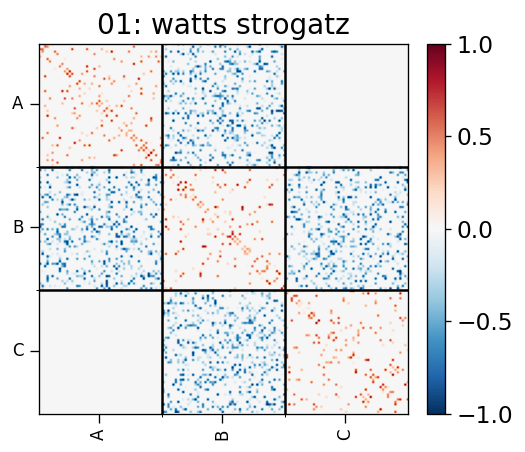

May 17-24, 2023: Nonlinear 1D sigmoid model: modular network:
Contents
May 17-24, 2023: Nonlinear 1D sigmoid model: modular network:¶
import csv
import os
import pickle
import random
import sys
from os.path import join as pjoin
import numpy as np
import scipy as sp
import pandas as pd
from scipy.spatial.distance import pdist, cdist, squareform, cosine
from scipy import stats
import tvb
import networkx as nx
import copy
import matlab.engine
from itertools import product
from tqdm import tqdm
from netrd.distance import ResistancePerturbation, PortraitDivergence, GraphDiffusion, DMeasure
sys.path.append("/usr/local/MATLAB/R2022b/bin/matlab")
# main dirs
proj_dir = pjoin(os.environ['HOME'], 'network_estimation')
month_dir = f"{proj_dir}/nb/apr23"
bdmodels_dir = f"{proj_dir}/helpers/bdmodels"
networks_dir = f"{proj_dir}/helpers/networks"
results_dir = f"{proj_dir}/results"
# plotting
import matplotlib as mpl
import matplotlib.pyplot as plt
import seaborn as sns
plt.rcParamsDefault['font.family'] = "sans-serif"
plt.rcParamsDefault['font.sans-serif'] = "Arial"
plt.rcParams['font.size'] = 14
plt.rcParams["errorbar.capsize"] = 0.5
import cmasher as cmr # CITE ITS PAPER IN YOUR MANUSCRIPT
# folders
sys.path.insert(0, proj_dir)
import helpers.functions.network_utils as nw_utils
import helpers.functions.plotting_utils as plot_utils
import helpers.functions.time_series_simulation_utils as ts_sim_utils
import helpers.functions.fc_utils as fc_utils
import helpers.inference.ARNI as arni
network construction¶
class ARGS(): pass
args = ARGS()
args.SEED = 100
np.random.seed(args.SEED)
args.SEEDS = [100, 50, 75]
args.num_rois = np.array([50, 50, 50])
args.density = np.array([0.5, 0.3, 0.5])
args.scale = 1
args.group_label = ['A', 'B', 'C']
args.module_parts = [[2, 2, 1], [2, 3, 3, 2], [1, 2, 2]]
mod_prt_sum = [np.sum(m) for m in args.module_parts]
args.module_parts = [
[int(nrois*prt/m) for prt in mod]
for m, mod, nrois in zip(mod_prt_sum, args.module_parts, args.num_rois)
]
args.module_ps = [
[[0.2, 0.2, 0.2], [0.2, 0.2, 0.2], [0.2, 0.2, 0.2]],
[[0.2, 0.2, 0.2, 0.2], [0.2, 0.2, 0.2, 0.2], [0.2, 0.2, 0.2, 0.2], [0.2, 0.2, 0.2, 0.2]],
[[0.2, 0.2, 0.2], [0.2, 0.2, 0.2], [0.2, 0.2, 0.2]],
]
args.num_networks = 1
args.num_modules = len(args.num_rois)
args.networks = [
[
ARGS()
for _ in range(args.num_modules)
]
for _ in range(args.num_networks)
]
idx_network = -1
idx_network += 1
for idx_module in range(args.num_modules):
module = ARGS()
module.name = 'watts strogatz'
module.graph_generator = nx.watts_strogatz_graph
module.params = [{'n':args.num_rois[idx_module], 'k':5, 'p':0.75, 'seed':int(args.SEEDS[idx_module])}]
args.networks[idx_network][idx_module] = module
networks = []
for idx_network in range(args.num_networks):
(
network,
roi_labels,
) = nw_utils.generate_connectivity_matrix(args, network=idx_network)
networks.append(network)
args = plot_utils.create_matrix_ticks(args)
args.cmap = mpl.colormaps['RdBu_r'] #cmr.iceburn # mpl.colormaps['Oranges']
plot_utils.display_networks(args, networks)
# args.num_rois = args.num_rois.sum(axis=0)
args.num_subjs = len(networks)
args.num_sigmas = 5
args.num_runs = 50

sp.io.savemat(
f"{networks_dir}/networks_numrois_{args.num_rois}.mat",
dict(networks=networks),
)
time series simulation¶
args.tspan = [0, 100]
args.delta_t = 0.1
args.sigmas = np.round(
np.linspace(start=0.0, stop=0.2, num=10, endpoint=False),
2,
)
args.sigmas[0] = 0.01
with stimulus¶
# version 1: with stimulus
stimulus = np.concatenate(
[
np.random.rand(args.num_rois[0],1),
np.zeros((args.num_rois[1],1)),
np.zeros((args.num_rois[2],1)),
],
axis=0,
)
args.num_rois = args.num_rois.sum(axis=0)
in_dict = {}
# in_dict['Kij'] = networks[0]
in_dict['A'] = matlab.double(15.0 * np.ones(shape=(args.num_rois,1))) # 4.5
in_dict['B'] = 0.0
in_dict['Iamp'] = 1.0
in_dict['tau'] = 15.0
in_dict['T'] = 30.0
in_dict['tspan'] = matlab.double(args.tspan)
in_dict['teval'] = matlab.double(
np.arange(args.tspan[0], args.tspan[-1], args.delta_t)
)
in_dict['s'] = matlab.double(stimulus)
# in_dict['sigma'] = 0.0
# simulate
eng = matlab.engine.start_matlab()
model_path = f"{bdmodels_dir}"
model = eng.simulate_Nonlinear_1D_sigmoid_SDE_model
(
in_dicts_ws, out_dicts_ws # with stimulus
) = ts_sim_utils.simulate_time_series(
args, in_dict, networks,
eng, model_path, model, n=1,
)
eng.quit()
# visualize time series
idx_subj, idx_sigma = 0, 2
args.subplot_layout = 'row-col'
plot_utils.plot_roi_time_series(
args,
out_dicts_ws[f"subj{idx_subj:02}"][f"sigma{idx_sigma:02}"][f"run{3:02}"],
roi_labels,
)
100%|██████████| 5/5 [03:56<00:00, 47.33s/it]
without stimulus¶
# version 2: without stimulus
# args.num_rois = args.num_rois.sum(axis=0)
stimulus = np.zeros((args.num_rois, 1))
in_dict = {}
# in_dict['Kij'] = networks[0]
in_dict['A'] = matlab.double(15.0 * np.ones(shape=(args.num_rois,1))) # 4.5
in_dict['B'] = 0.0
in_dict['Iamp'] = 1.0
in_dict['tau'] = 15.0
in_dict['T'] = 30.0
in_dict['tspan'] = matlab.double(args.tspan)
in_dict['teval'] = matlab.double(
np.arange(args.tspan[0], args.tspan[-1], args.delta_t)
)
in_dict['s'] = matlab.double(stimulus)
# in_dict['sigma'] = 0.0
# simulate
eng = matlab.engine.start_matlab()
model_path = f"{bdmodels_dir}"
model = eng.simulate_Nonlinear_1D_sigmoid_SDE_model
(
in_dicts_ns, out_dicts_ns # no stimulus
) = ts_sim_utils.simulate_time_series(
args, in_dict, networks,
eng, model_path, model, n=1,
)
eng.quit()
# visualize time series
idx_subj, idx_sigma = 0, 2
args.subplot_layout = 'row-col'
plot_utils.plot_roi_time_series(
args,
out_dicts_ns[f"subj{idx_subj:02}"][f"sigma{idx_sigma:02}"][f"run{3:02}"],
roi_labels,
)
100%|██████████| 5/5 [04:01<00:00, 48.34s/it]
functional connectivity¶
dist_objs = [fc_utils.CosineDistance()] #, PortraitDivergence(), ResistancePerturbation()]
dist_names = ['Cosine'] #, 'Portrait Divergence', 'Resistance Perturbation']
log_scales = [False] #, False, True, True]
with stimulus¶
fcs_ws = fc_utils.compute_fcs(args, out_dicts_ws)
fcs_avg_ws, fcs_std_ws = fc_utils.get_average_fcs(args, fcs_ws)
args.cmap = mpl.colormaps['RdBu_r'] #cmr.iceburn # mpl.colormaps['Oranges']
plot_utils.display_fcs(args, networks, fcs_avg_ws)
plot_utils.display_fcs(args, networks, fcs_std_ws)
100%|██████████| 5/5 [00:06<00:00, 1.37s/it]
100%|██████████| 5/5 [00:00<00:00, 172.56it/s]
100%|██████████| 5/5 [00:00<00:00, 8.86it/s]
100%|██████████| 5/5 [00:00<00:00, 57.76it/s]
all_dists_ws = fc_utils.calculate_fc_dists(
args, networks, fcs_ws, dist_objs, dist_names, log_scales
)
100%|██████████| 5/5 [00:07<00:00, 1.59s/it]
100%|██████████| 5/5 [00:00<00:00, 360.14it/s]
without stimulus¶
fcs_ns = fc_utils.compute_fcs(args, out_dicts_ns)
fcs_avg_ns, fcs_std_ns = fc_utils.get_average_fcs(args, fcs_ns)
args.cmap = mpl.colormaps['RdBu_r'] #cmr.iceburn # mpl.colormaps['Oranges']
plot_utils.display_fcs(args, networks, fcs_avg_ns)
plot_utils.display_fcs(args, networks, fcs_std_ns)
100%|██████████| 5/5 [00:06<00:00, 1.29s/it]
100%|██████████| 5/5 [00:00<00:00, 195.58it/s]
100%|██████████| 5/5 [00:00<00:00, 60.35it/s]
100%|██████████| 5/5 [00:01<00:00, 4.82it/s]
all_dists_ns = fc_utils.calculate_fc_dists(
args, networks, fcs_ns, dist_objs, dist_names, log_scales
)
100%|██████████| 5/5 [00:08<00:00, 1.62s/it]
100%|██████████| 5/5 [00:00<00:00, 922.27it/s]